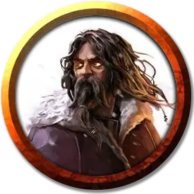

Безумный маг с горы Бараток
The Mad Mage of Mount Baratok
Средний Гуманоид (Человек), хаотично-нейтральный, именной НИП

Класс Доспеха 12 (15 с доспехами мага)
Хиты 99 (18к8 + 18)
Скорость 30 футов
| мод | спас | ||
|---|---|---|---|
| СИЛ | 10 | +0 | +0 |
| ЛОВ | 14 | +2 | +2 |
| ТЕЛ | 12 | +1 | +1 |
| мод | спас | ||
|---|---|---|---|
| ИНТ | 20 | +5 | +9 |
| МДР | 15 | +2 | +6 |
| ХАР | 16 | +3 | +3 |
Навыки История +13, Магия +13
Сопротивление урону немагический дробящий, колющий, рубящий (от каменной кожи [Stoneskin]), урону от заклинаний
Чувства пассивное Восприятие 12
Языки Любой 6
Опасность 12 (8400 опыта)
Бонус мастерства +4
Особенности
Сопротивление магии. Безумный маг совершает с преимуществом спасброски от заклинаний и прочих магических эффектов.
Использование заклинаний. Безумный маг является заклинателем 18-го уровня. Его базовой характеристикой является Интеллект (Сл спасброска от заклинания 17, +9 к попаданию атаками заклинаниями). Безумный маг может неограниченно накладывать маскировку [disguise self] и невидимость [invisibility], и у него подготовлены следующие заклинания волшебника:
• Заговоры (неограниченно): огненный снаряд [fire bolt], свет [light], волшебная рука [mage hand], фокусы [prestidigitation], электрошок [shocking grasp]
• 1-й уровень (4 ячейки): обнаружение магии [detect magic], доспехи мага [mage armor]*, волшебная стрела [magic missile], щит [shield]
• 2-й уровень (3 ячейки): отражения [mirror image], туманный шаг [misty step], паутина [web]
• 3-й уровень (3 ячейки): контрзаклинание [counterspell], полёт [fly], молния [lightning bolt]
• 4-й уровень (3 ячейки): верный пёс Морденкайнена [Mordenkainen’s faithful hound], превращение [polymorph]*, каменная кожа [stoneskin]
• 5-й уровень (3 ячейки): длань Бигби [Bigby’s hand], конус холода [cone of cold], наблюдение [scrying]
• 6-й уровень (1 ячейка): истинное зрение [true seeing]
• 7-й уровень (1 ячейка): великолепный особняк Морденкайнена [Mordenkainen’s magnificent mansion]*
• 8-й уровень (1 ячейка): сокрытие разума [mind blank]*
• 9-й уровень (1 ячейка): остановка времени [time stop]
*У безумного мага эти заклинания уже наложены перед сражением.
Действия
Кинжал. Рукопашная или дальнобойная атака оружием: +6 к попаданию, досягаемость 5 футов или дистанция 20/60 футов, одна цель. Попадание: 4 (1к4 + 2) колющего урона.
Описание
Безумный Маг Горы Бараток прибыл в Баровию более года назад, чтобы освободить людей от тирании Страда, но он недооценил власть Страда над этой землёй и её существами. После битвы между ними в Замке Равенлофт, Страд вывел Безумного Мага в горы и сбросил его с Водопада Тсер (область Н). Волшебник, потеряв свой посох и книгу заклинаний, пережил падение и отступил в горы, в надежде восполнить свои силы, но лишь сошёл с ума, осознав, что более нет надежды на победу над Страдом и освобождение людей из проклятого царства вампира.
Безумный Маг забыл собственное имя и мир, откуда он прибыл. На самом деле, он даже не помнит, что произошло до того, как он потерял рассудок. Он страдает от паранойи, что могущественные враги охотятся на него, а их злые лазутчики повсюду наблюдают за ним.
Полагая, что персонажи прибыли, чтобы убить его, Безумный Маг даёт волю своей разрушительной магии. Когда он набрасывается на них, он выкрикивает, «Вы думаете, моя магия ослабела? Подумайте ещё!». Если его хиты опустятся до 50 или ниже, он выкрикивает, «Скажите своим тёмных хозяевам, что они могут сломить моё тело, но не дух!» После чего он пытается сбежать.
В обычных обстоятельствах, заклинание высшее восстановление [greater restoration], сотворённое на Безумного Мага, вернуло бы ему его рассудок и сняло бы с него безумие, позволив ему вспомнить, что он никто иной как Морденкайнен, архимаг с Оэрта [Mordenkainen, an archmage of Oerth] и лидер могучей группы искателей приключений, под названием Круг Восьми [Circle of Eight]. Но в этом конкретном случае, Безумный Маг сотворил на себя заклинание сокрытие разума [mind blank]. Пока заклинание действует, его рассудок не может быть восстановлен никакими заклинаниями. Если персонажи предположат, что им мешает это сделать какая-то мощная магия, они могут убедить Безумного Мага открыть им, почему их заклинания проваливаются, при помощи успешной проверки Харизмы (Убеждение) Сл 15. Персонаж также может догадаться о причине провала заклинаний при успешной проверке Интеллекта (Магия) Сл 18.
Сокрытие разума [mind blank] Безумного Мага будет действовать ещё 3к6 часов, после чего, его безумие может быть вылечено как обычно.
Безумный Маг обладает отличающимся от приведенного в Бестиарии списком заклинаний архимага, и он уже использовал одну ячейку 1-го уровня, чтобы сотворить доспехи мага [mage armor] на себя, одну ячейку 4-го уровня, чтобы сотворить на себя превращение [polymorph], одну ячейку 7-го уровня, чтобы сотворить великолепный особняк Морденкайнена [mordenkainen’s magnificent mansion] (см. «Особняк Безумного Мага») и одну ячейку 8-го уровня, чтобы сотворить сокрытие разума [mind blank] на себя.